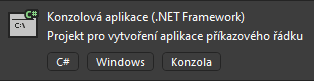

Úvod do C# a proměnné
V této lekci se seznámíme s proměnnými a s tím jak je využívat.
První si musíme ovšem vytvořit projekt. Otevřeme si Visual Studio a klikneme na tlačítko Vytvořit nový projekt:
Poté si vybereme, jaký typ projektu budeme dělat. Zatím začneme v klasické Konzolové aplikaci typu .NET Framework:

Pozor, aby tam bylo to .NET Framework. Verze bez .NET Frameworku bude fungovat podobně, ale
některé věci nemusí fungovat stejně.
Poté se nám spustí grafické rozhraní, kde vidíme kód. Výchozí kód by měl vypadat nějak takto:
using System;
using System.Collections.Generic;
using System.Linq;
using System.Text;
using System.Threading.Tasks;
namespace playground_dotnet_framework
{
internal class Program
{
static void Main(string[] args)
{
}
}
}
Vidíme zde již nějaký předepsaný kód. Náš kód budeme psát do funkce Main. První kód, co přidáme bude
Console.WriteLine("Hello World!");.
Náš kód by měl vypadat nějak takto:
using System;
using System.Collections.Generic;
using System.Linq;
using System.Text;
using System.Threading.Tasks;
namespace playground_dotnet_framework
{
internal class Program
{
static void Main(string[] args)
{
Console.WriteLine("Hello World!");
}
}
}
Tento kód můžeme spustit pomocí tlačítka nahoře:

Všimněte si, že když to spustíme, problikne nám okno, ale nic moc nevidíme. Kód totiž vykonal příkaz
Console.WriteLine("Hello World!");, jenž vypíše do konzole text "Hello World!" a po té se
ukončil. Abychom něco viděli, musíme do kódu přidat Console.ReadLine();, čímž programu řekneme,
že má vyčkat na vstup od uživatele.
using System;
using System.Collections.Generic;
using System.Linq;
using System.Text;
using System.Threading.Tasks;
namespace playground_dotnet_framework
{
internal class Program
{
static void Main(string[] args)
{
Console.WriteLine("Hello World!");
Console.ReadLine();
}
}
}
Poté se nám spustí okno s naším programem, kde můžeme vidět nápis "Hello World!". Když pak dáme ENTER, program se ukončí.
Hello, World!
Další kód bude už bez ostatního kódu kolem, neboli pouze vnitřek funkce Main.
V tomto kódu můžeme upravit, co se má do konzole vypsat. Aby to ovšem zůstalo jako text, musí to zůstat v uvozovkách, například:
Console.WriteLine("Ahoj, Světe!");
Console.ReadLine();
Do tohoto kódu můžeme také napsat matematický příklad, je ovšem potřeba odstranit uvozovky, jinak to bude program brát jako text:
Console.WriteLine(1+2);
Console.ReadLine();
Zapisování čísel do kódu tímto způsobem je ovšem docela těžkopádné, proto využíváme tzv. proměnné.
Proměnná je věc, do které můžeme uložit nějakou hodnotu a poté s ní pracovat. Existuje spoustu typů proměnných, ukážeme si některé z nich:
int je číslo (bez desetiných míst)
string je text
Existuje jich mnohem více, ale ukážeme si je později.
První je třeba proměnnou vytvořit, uděláme to pomocí kódu int/string [název];
a poté ho nastavíme na nějaké číslo pomocí [název] [hodnota].
Zkusíme si to na následujícím kódu:
int prvniCislo;
int druheCislo;
prvniCislo = 5;
druheCislo = 4;
string text;
text = "Součet dvou čísel je: ";
Console.Write(text);
Console.WriteLine(prvniCislo + druheCislo);
Console.ReadLine();
Tento kód můžeme trochu zkrátit tím, že výpis obou proměnných dáme na jeden řádek.
Console.WriteLine($"{text}{prvniCislo + druheCislo}");
Console.WriteLine výše funguje tak, že funguje jako text, ovšem to co je uvnitř {} se spustí jako kód.
Dále můžeme brát výstup od uživatele a zapisovat ho do proměnné, můžeme si to ukázat na tomto kódu:
Console.Write("Zadejte vaše jméno: ");
string jmeno = Console.ReadLine();
Console.WriteLine($"Vaše jméno je: {jmeno}");
Console.ReadLine();
Výstup by měl vypadat nějak takto:
Zadejte vaše jméno: Filip
Vaše jméno je: Filip
Pokud budeme brát číslo, musíme ho první převést z textu na číslo:
Console.Write("Zadejte váš věk: ");
int cislo = Convert.ToInt32(Console.ReadLine());
Console.WriteLine($"Váš věk je: {cislo}");
Console.WriteLine($"Za dva roky váš věk bude: {cislo + 2}");
Console.ReadLine();
Výstup bude vypadat takto:
Zadejte váš věk: 16
Váš věk je: 16
Za dva roky váš věk bude: 18
Příliš snadné?
Zadání pro zkušenější programátory, jenž programovali už někdy dříve před tímto kroužkem: Vytvořte kalkulačku, kde bude uživatel zadávat celý příklad na jednom řádku. Nebojte se si cokoliv najít na internetu / vygooglit.
Nepodařilo se načíst kód. Máte povolený JavaScript?
Nepodařilo se načíst kód. Máte povolený JavaScript?